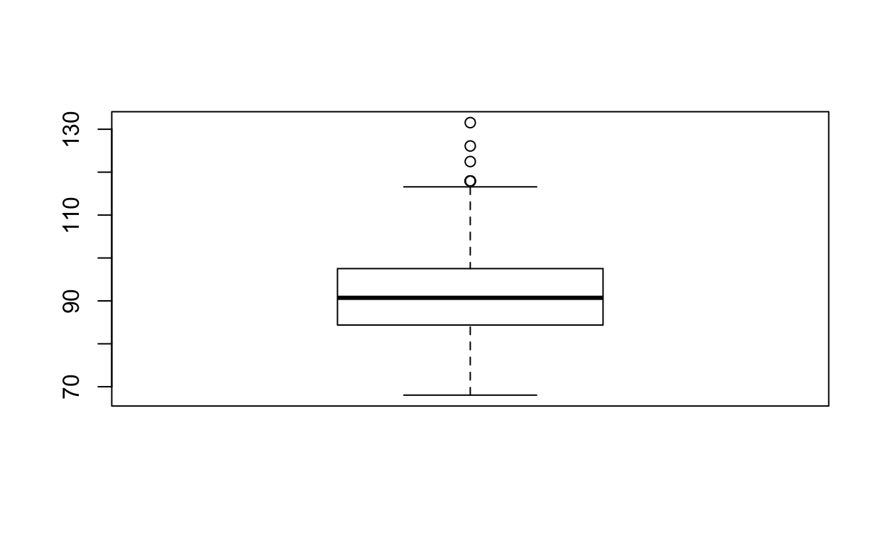
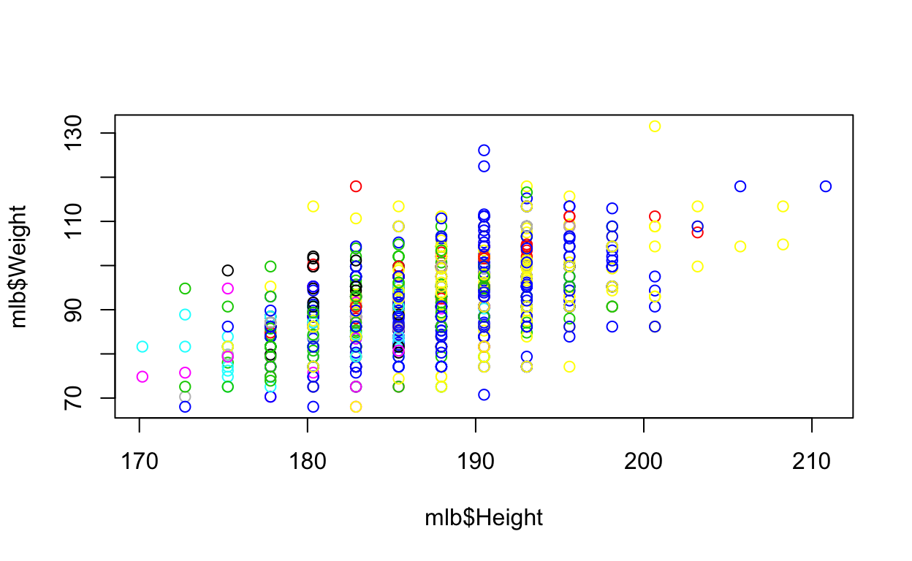
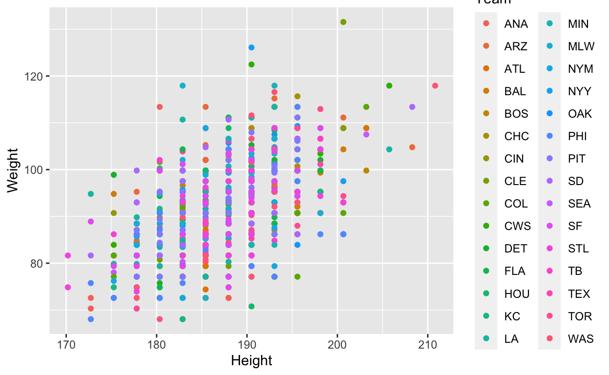
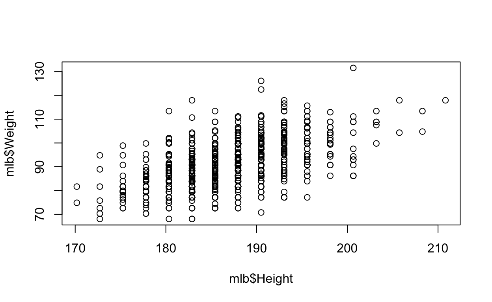
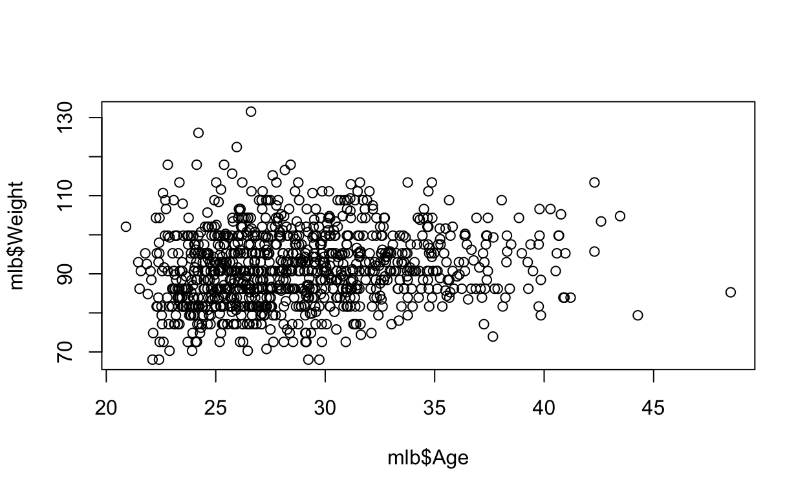
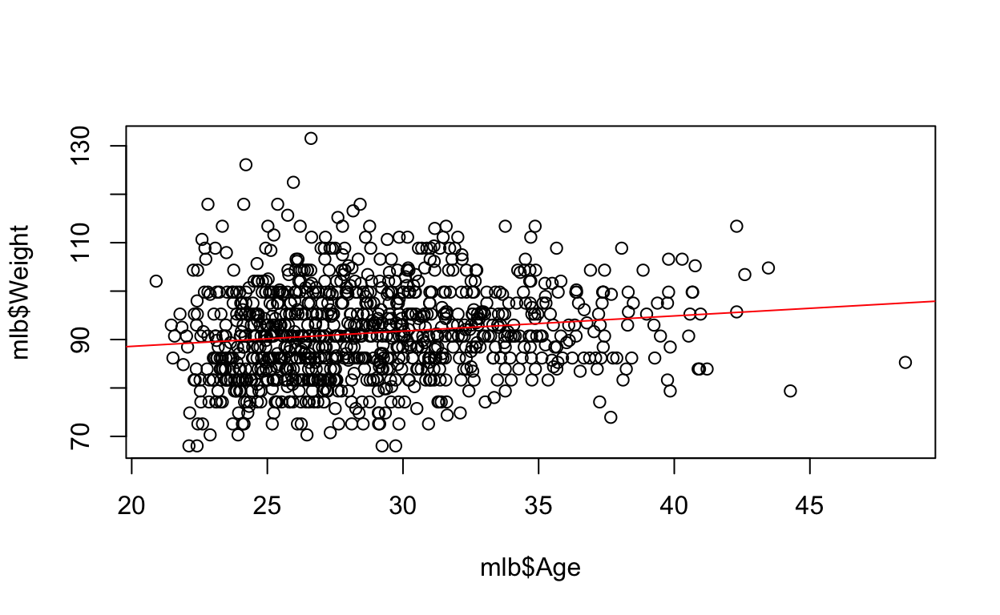
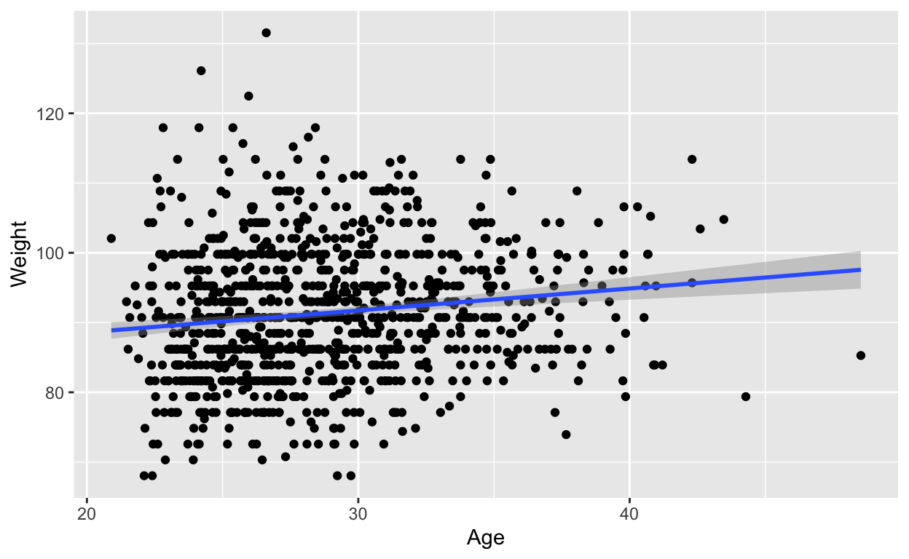
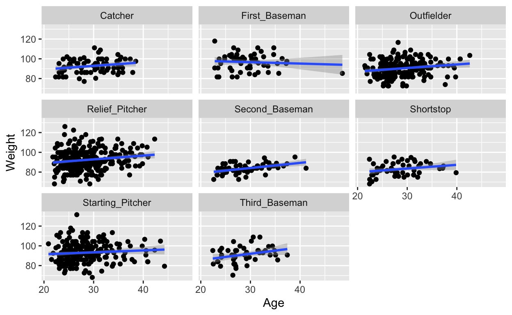
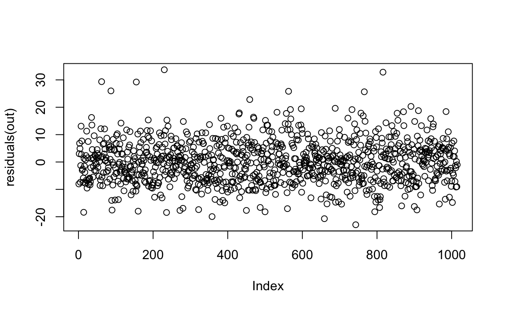

The source code of this file here
Load data from Matloff example
library(dplyr)
library(rmarkdown)
mlb <- read.table('https://raw.githubusercontent.com/matloff/fasteR/master/data/mlb.txt',header=TRUE)
mlb %>% paged_tableSave and load
library(writexl)
library(readxl)
mlb %>% write_xlsx("MLB.xlsx")
mlb1 <- read_xlsx("MLB.xlsx") EDA
library(dplyr)
mlb <- mlb %>% mutate(Height = Height*2.54, Weight = Weight*0.45359237)
mlb
Name Team Position Height Weight Age
1 Adam_Donachie BAL Catcher 187.96 81.64663 22.99
2 Paul_Bako BAL Catcher 187.96 97.52236 34.69
3 Ramon_Hernandez BAL Catcher 182.88 95.25440 30.78
4 Kevin_Millar BAL First_Baseman 182.88 95.25440 35.43
5 Chris_Gomez BAL First_Baseman 185.42 85.27537 35.71
6 Brian_Roberts BAL Second_Baseman 175.26 79.83226 29.39
7 Miguel_Tejada BAL Shortstop 175.26 94.80081 30.77
8 Melvin_Mora BAL Third_Baseman 180.34 90.71847 35.07
9 Aubrey_Huff BAL Third_Baseman 193.04 104.77984 30.19
10 Adam_Stern BAL Outfielder 180.34 81.64663 27.05
11 Jeff_Fiorentino BAL Outfielder 185.42 85.27537 23.88
12 Freddie_Bynum BAL Outfielder 185.42 81.64663 26.96
13 Nick_Markakis BAL Outfielder 187.96 83.91459 23.29
14 Brandon_Fahey BAL Outfielder 187.96 72.57478 26.11
PosCategory
1 Catcher
2 Catcher
3 Catcher
4 Infielder
5 Infielder
6 Infielder
7 Infielder
8 Infielder
9 Infielder
10 Outfielder
11 Outfielder
12 Outfielder
13 Outfielder
14 Outfielder
[ reached 'max' / getOption("max.print") -- omitted 1001 rows ]Distribution of height
boxplot(mlb$Height)
mlb$Height %>% summary
Min. 1st Qu. Median Mean 3rd Qu. Max.
170.2 182.9 188.0 187.2 190.5 210.8 Distribution of weight
boxplot(mlb$Weight)
mlb$Weight %>% summary
Min. 1st Qu. Median Mean 3rd Qu. Max.
68.04 84.37 90.72 91.33 97.52 131.54 Who has the largest weight
mlb %>% filter(Weight > 120)
Name Team Position Height Weight Age
1 Bobby_Jenks CWS Relief_Pitcher 190.50 122.4699 25.96
2 C.C._Sabathia CLE Starting_Pitcher 200.66 131.5418 26.61
3 Chris_Britton NYY Relief_Pitcher 190.50 126.0987 24.21
PosCategory
1 Pitcher
2 Pitcher
3 PitcherPlot with colour
Base R
plot(x = mlb$Height, y = mlb$Weight, col = mlb$Position)
ggplot
library(ggplot2)
ggplot(aes(x = Height, y = Weight, colour = Team), data = mlb) + geom_point()
plot(x = mlb$Height, y = mlb$Weight)
Weight vs Age
plot(x = mlb$Age, y = mlb$Weight)
out <- lm(Weight~Age, data = mlb)
summary(out)
Call:
lm(formula = Weight ~ Age, data = mlb)
Residuals:
Min 1Q Median 3Q Max
-23.613 -6.629 -0.370 6.045 40.872
Coefficients:
Estimate Std. Error t value Pr(>|t|)
(Intercept) 82.29825 1.97607 41.647 < 2e-16 ***
Age 0.31461 0.06807 4.622 4.29e-06 ***
---
Signif. codes: 0 '***' 0.001 '**' 0.01 '*' 0.05 '.' 0.1 ' ' 1
Residual standard error: 9.352 on 1013 degrees of freedom
Multiple R-squared: 0.02065, Adjusted R-squared: 0.01969
F-statistic: 21.36 on 1 and 1013 DF, p-value: 4.292e-06
plot(x = mlb$Age, y = mlb$Weight)
abline(out, col = 2)
summary(out)
Call:
lm(formula = Weight ~ Age, data = mlb)
Residuals:
Min 1Q Median 3Q Max
-23.613 -6.629 -0.370 6.045 40.872
Coefficients:
Estimate Std. Error t value Pr(>|t|)
(Intercept) 82.29825 1.97607 41.647 < 2e-16 ***
Age 0.31461 0.06807 4.622 4.29e-06 ***
---
Signif. codes: 0 '***' 0.001 '**' 0.01 '*' 0.05 '.' 0.1 ' ' 1
Residual standard error: 9.352 on 1013 degrees of freedom
Multiple R-squared: 0.02065, Adjusted R-squared: 0.01969
F-statistic: 21.36 on 1 and 1013 DF, p-value: 4.292e-06
ggplot(aes(x = Age, y = Weight), data = mlb) + geom_point() + geom_smooth(method = "lm")
ggplot(aes(x = Age, y = Weight), data = mlb) + geom_point() + geom_smooth(method = "lm") + facet_wrap(~Position)
out <- lm(Weight~Age+Height, data = mlb)
summary(out)
Call:
lm(formula = Weight ~ Age + Height, data = mlb)
Residuals:
Min 1Q Median 3Q Max
-22.922 -5.578 -0.135 4.910 33.702
Coefficients:
Estimate Std. Error t value Pr(>|t|)
(Intercept) -85.11124 8.13957 -10.46 < 2e-16 ***
Age 0.41346 0.05703 7.25 8.25e-13 ***
Height 0.87925 0.04186 21.00 < 2e-16 ***
---
Signif. codes: 0 '***' 0.001 '**' 0.01 '*' 0.05 '.' 0.1 ' ' 1
Residual standard error: 7.808 on 1012 degrees of freedom
Multiple R-squared: 0.318, Adjusted R-squared: 0.3166
F-statistic: 235.9 on 2 and 1012 DF, p-value: < 2.2e-16
plot(residuals(out))